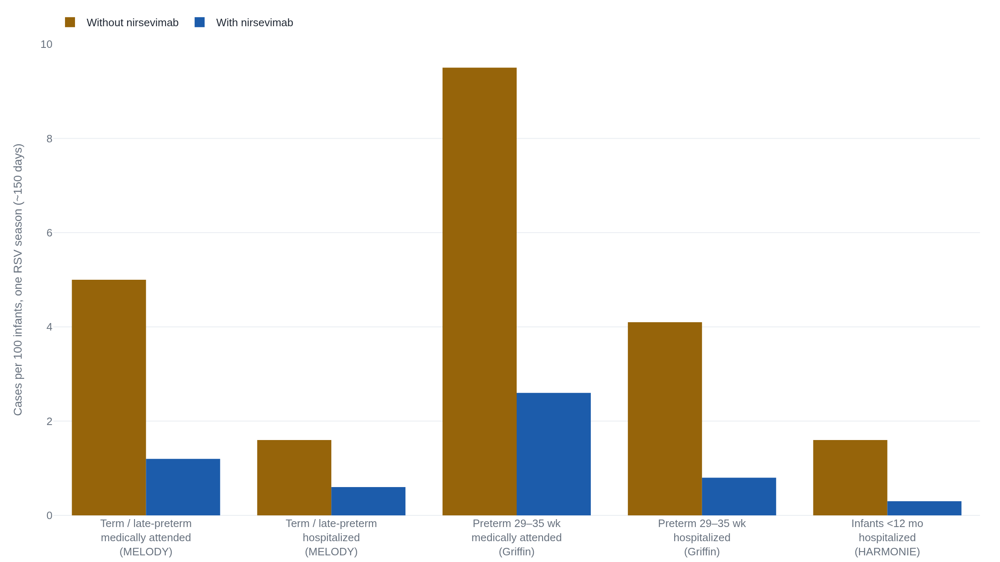

Nirsevimab cuts a healthy baby's RSV risk by three-quarters, and by four in a hundred
A single antibody shot prevents most medically-attended RSV in infants; for a low-risk baby, that large relative number is a small absolute one.
What RSV does to a healthy infant before any shot
Respiratory syncytial virus is the ordinary winter cold that, in the first year of life, sometimes is not ordinary. Before the new antibody reached U.S. infants, RSV sent an estimated 58,000 to 80,000 children under five to the hospital each year and was the leading cause of infant hospitalization.1 For a single healthy baby the plainest way to hold that risk is a rate: two to three of every hundred infants under three months are hospitalized with RSV in a season.1
Nirsevimab, sold as Beyfortus, is not a vaccine. It is a laboratory-made antibody given as one injection. It supplies ready-made protection that lasts across a single RSV season, rather than training the immune system to make its own.2 U.S. advisers recommend one dose for every infant younger than eight months born during or entering a first RSV season, at 50 mg for babies under 5 kg and 100 mg at or above it.2 The question here is narrower than that recommendation: for a healthy, full-term baby, how much does the shot actually change, and is it the only way to get the change?
What the three trials actually counted
Three randomized trials carry most of the weight, and they did not enroll the same babies or measure the same event.
MELODY tested nirsevimab in healthy infants born at 35 weeks of gestation or later, the group closest to a typical term baby. Its main measure was medically-attended RSV lower-respiratory infection, a case bad enough to bring the baby to a doctor, over the roughly 150 days of a season. Among the 496 infants given placebo, 25 had such a case (5.0%); among the 994 given nirsevimab, 12 did (1.2%). That is a relative reduction of 74.5%.3
Griffin asked the same question one step earlier in pregnancy, in healthy preterm infants born between 29 and 35 weeks, where the untreated risk is higher. A medically-attended RSV case occurred in 46 of 484 placebo infants (9.5%) and 25 of 969 on nirsevimab (2.6%), a 70.1% reduction.4
HARMONIE went after the outcome families fear most, hospitalization, in a pragmatic trial of about 8,000 infants in Britain, France and Germany that compared nirsevimab against no shot at all. RSV put 64 of 4,019 untreated infants in the hospital (1.6%) and 11 of 4,038 treated ones (0.3%), an efficacy near 84%.5
| Group · endpoint | Without | With | Relative cut |
|---|---|---|---|
| MELODY term, medically attended | 25 / 496 = 5.0% | 12 / 994 = 1.2% | 74.5% |
| MELODY term, hospitalized | 8 / 496 = 1.6% | 6 / 994 = 0.6% | 62% (not significant, p=0.07) |
| Griffin preterm, medically attended | 46 / 484 = 9.5% | 25 / 969 = 2.6% | 70.1% |
| Griffin preterm, hospitalized | 20 / 484 = 4.1% | 8 / 969 = 0.8% | 78.4% |
| HARMONIE infants, hospitalized | 64 / 4019 = 1.6% | 11 / 4038 = 0.3% | 84% |
The same result in relative and absolute terms
A reduction of 74.5% and a drop from 5.0% to 1.2% are the same fact about MELODY, said two ways. The first is a ratio. The second is the ground a parent stands on.
Without the shot, 5.0 in 100 healthy term infants get a medically-attended RSV case in a season; with it, 1.2 in 100. Treating 100 such infants prevents about 3.8 of those cases, the gap between the two rates. Preventing one such doctor's visit therefore takes about 26 treated infants.3 For hospitalization the healthy-infant gap is smaller, near one case per hundred, so the count of babies treated per hospitalization avoided runs closer to 100.3
"Number needed to treat" is that division made explicit: one divided by the absolute drop in risk. A large relative reduction sitting on a small baseline still leaves a large number, because there was little risk to remove.3
The baseline is why the same drug reads differently for a preterm baby. In Griffin the relative reduction was similar, but it sat on a 9.5% starting risk. The absolute drop was 6.9 points, and the number needed to treat fell to about 15.4 Pooled across the trials, U.S. advisers put efficacy against medically-attended RSV at 79%.2 The chart holds all of it at once: every bar is short, because a single healthy infant's season risk is low even where the relative reductions are large.

Where the evidence runs out
The strong claim is narrow. The weaker claims are where a low-risk family's decision actually lives.
- The reduction in medically-attended RSV replicates across a placebo trial in term infants, a placebo trial in preterm infants, and a pragmatic trial against usual care.
- In the first U.S. season, real-world surveillance put nirsevimab's effectiveness against RSV hospitalization at 90%.
- The next season, infant RSV hospitalizations aged 0 to 7 months fell 43% in one national network and 28% in another against pre-pandemic seasons.
- In MELODY's healthy infants alone, the hospitalization endpoint did not reach statistical significance (p=0.07); the strong hospitalization evidence comes from HARMONIE and surveillance, not from MELODY.
- The 90% figure covered a median of only 45 days; the CDC expects effectiveness to fall over a full season as the antibody wanes.
- RSV death in a healthy U.S. infant is rare, so the trials could not detect a mortality benefit even if one exists.
- Access is not automatic: the first U.S. season the 100 mg dose ran short and the CDC told clinicians to prioritize the highest-risk infants.
The surveillance numbers are firsthand CDC work, not modeling. The 90% estimate came from infants admitted with acute respiratory illness and tested for RSV.6 The population declines came from two hospital networks compared with 2018–2020, though an ecologic count cannot pin the drop on any one product.7 The supply squeeze is documented in the CDC's own alert to clinicians.8
That nirsevimab prevents medically-attended RSV illness in healthy infants is strong and consistent. That it changes the rarest outcomes for one particular low-risk baby, a hospitalization or a death, is either modest in absolute size or beyond what these trials could measure. Both are true at once, and a real-world effectiveness that slips as the antibody wanes would sharpen the second without touching the first.6
One route, not two, and what a pediatrician decides
There are two ways to give a young infant this protection, and for most babies only one is used. Either the pregnant parent receives the maternal RSV vaccine (RSVpreF, sold as Abrysvo) at 32 to 36 weeks, which passes antibodies across the placenta, or the baby receives nirsevimab after birth. The CDC's wording leaves no room to read it as both: either route "is recommended to prevent RSV-associated LRTI in infants, but both are not needed for most infants."9 The American Academy of Pediatrics tells parents the same thing.10
The two routes are not identical. The maternal vaccine's trial showed about 69% efficacy against severe medically-attended RSV in an infant's first months.9 In that trial, slightly more babies of vaccinated mothers were born preterm than of placebo mothers. At the approved 32-to-36-week window the difference was small and not statistically significant, and the window was set there partly to address it.9 Nirsevimab sidesteps the pregnancy question but has to be given in person, stocked, and paid for.8
For the child this desk follows, born in February 2026, the live questions are timing and eligibility, and those belong to a pediatrician. Which season counts as the first depends on the birth date and the calendar. A healthy child past eight months is usually out of scope, because routine second-season doses go only to children at high risk. Whether the maternal vaccine was already given, and the baby's weight on the day, settle the rest.29 The evidence sets the frame; it does not fill in a single child. A household can carry two things into that visit: the distance between a 75% and a four-in-a-hundred, and the fact that the choice is one route or the other, not whether to do everything.
This desk reads the evidence; it does not replace a pediatrician. Any infant born prematurely or with a heart condition, chronic lung disease, or another risk factor sits outside the healthy-term picture drawn here. For those children the benefit is larger and the guidance its own, and the plan belongs with their doctor.2
Sources
- CDC · RSV in Infants and Young Children (burden and baseline rates)
- CDC MMWR · Use of Nirsevimab for the Prevention of RSV Disease Among Infants and Young Children (ACIP, Aug 2023)
- ClinicalTrials.gov · MELODY trial of nirsevimab (NCT03979313), registered results, primary cohort
- ClinicalTrials.gov · Phase 2b trial of nirsevimab in preterm infants (Griffin, NCT02878330), registered results
- ClinicalTrials.gov · HARMONIE trial of nirsevimab (NCT05437510), registered results
- CDC MMWR · Early Estimate of Nirsevimab Effectiveness — New Vaccine Surveillance Network, Oct 2023–Feb 2024
- CDC MMWR · Interim Evaluation of RSV Hospitalization Rates After Introduction of RSV Prevention Products, Oct 2024–Feb 2025
- CDC Health Alert Network · Limited Availability of Nirsevimab in the United States (HAN 00499, 2023)
- CDC MMWR · Use of the Pfizer RSVpreF Vaccine in Pregnant Persons (ACIP, Oct 2023)
- American Academy of Pediatrics (HealthyChildren.org) · RSV: When It's More Than Just a Cold